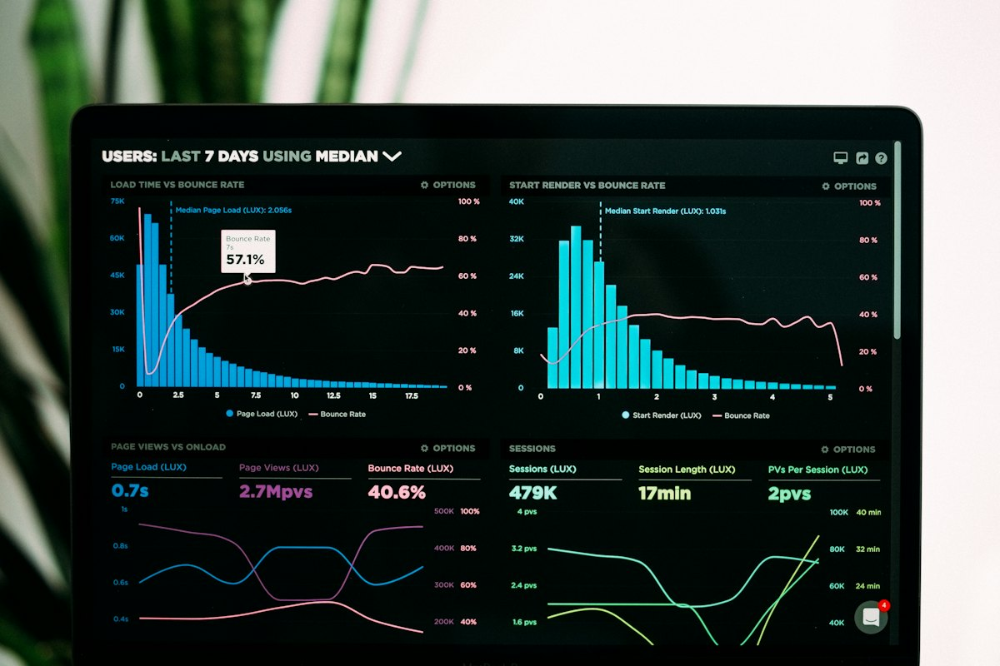
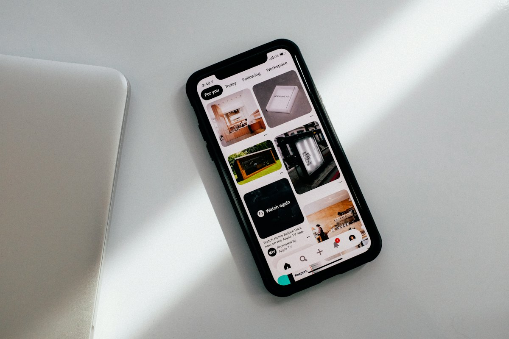
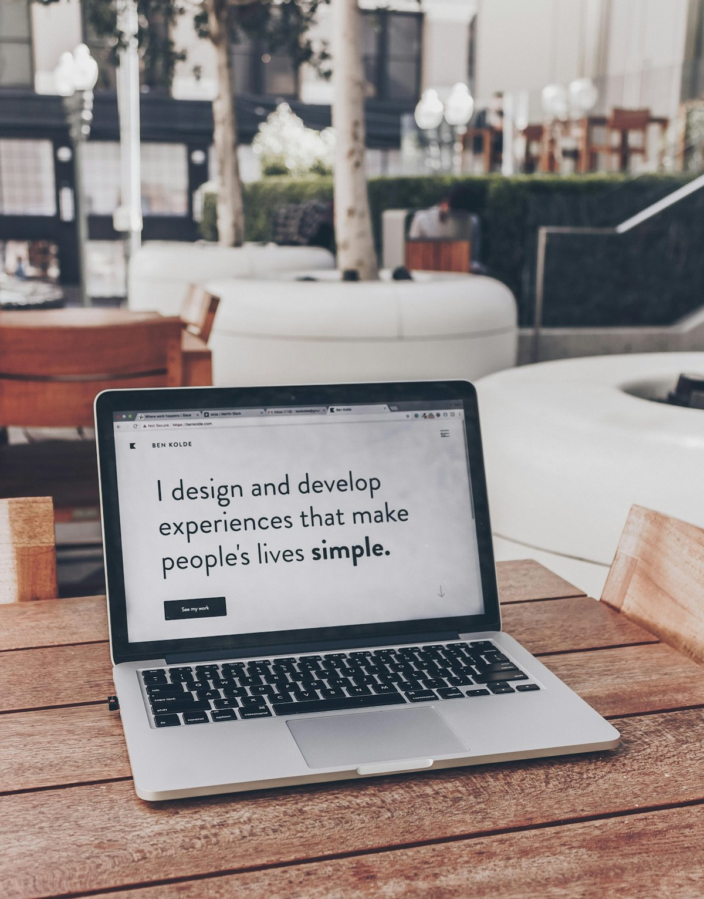

What we're
thinking about.
Working notes on branding, web, growth and AI from our team in South Florida: what's working, what isn't, and what we'd do in your shoes.

Latest · Featured
What Is aiSEO? How AI Search Is Changing the Way Customers Find Local Businesses
AI search is rewriting how local customers discover businesses. Learn how aiSEO builds the authority, trust, technical groundwork, citations and media presence needed to get recommended by AI tools.
Read the article
Google's Preferred Sources Button: Who Should Actually Use It (And Who Shouldn't)

How To Get Your Business On ChatGPT: A Complete Guide

Local SEO 2026: Why Your Google Business Profile Isn't Enough

SEO Trends 2026: Tools and Tactics That Actually Drive Results
AI and SEO: How Artificial Intelligence Shapes Search

How to Create Evergreen Content That Generates Leads for Years

Writing for Voice Search and Conversational Queries
Topic Clusters & Pillar Pages: The Modern SEO Content Strategy

Landing Pages for Paid Traffic: Better Leads, Better ROI

Designing Mobile First: Why Desktop Is Now Second Priority

Is Your Website Outdated? Here's How to Tell

The Psychology Behind Web Design Colors and Layout Choices